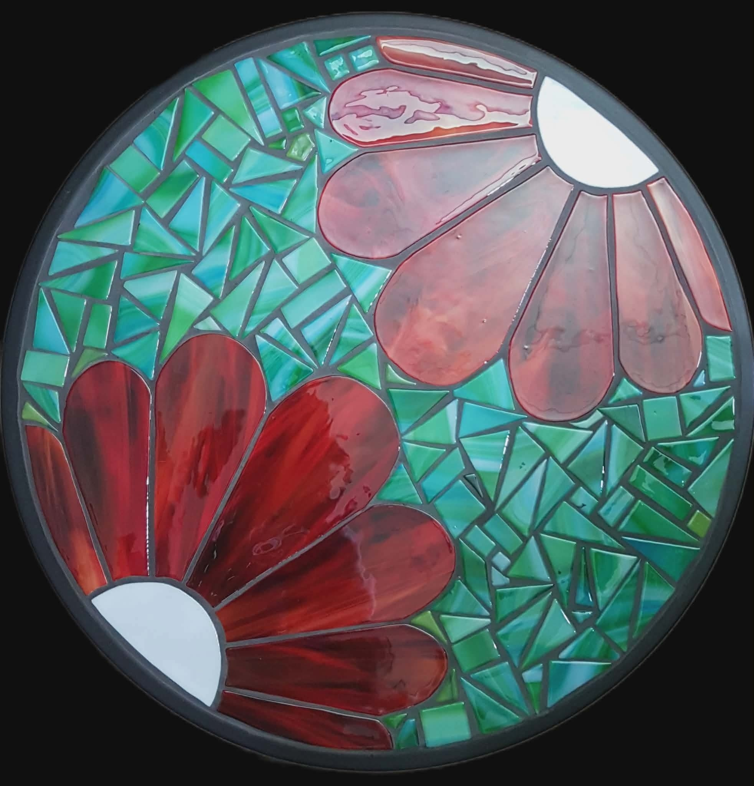
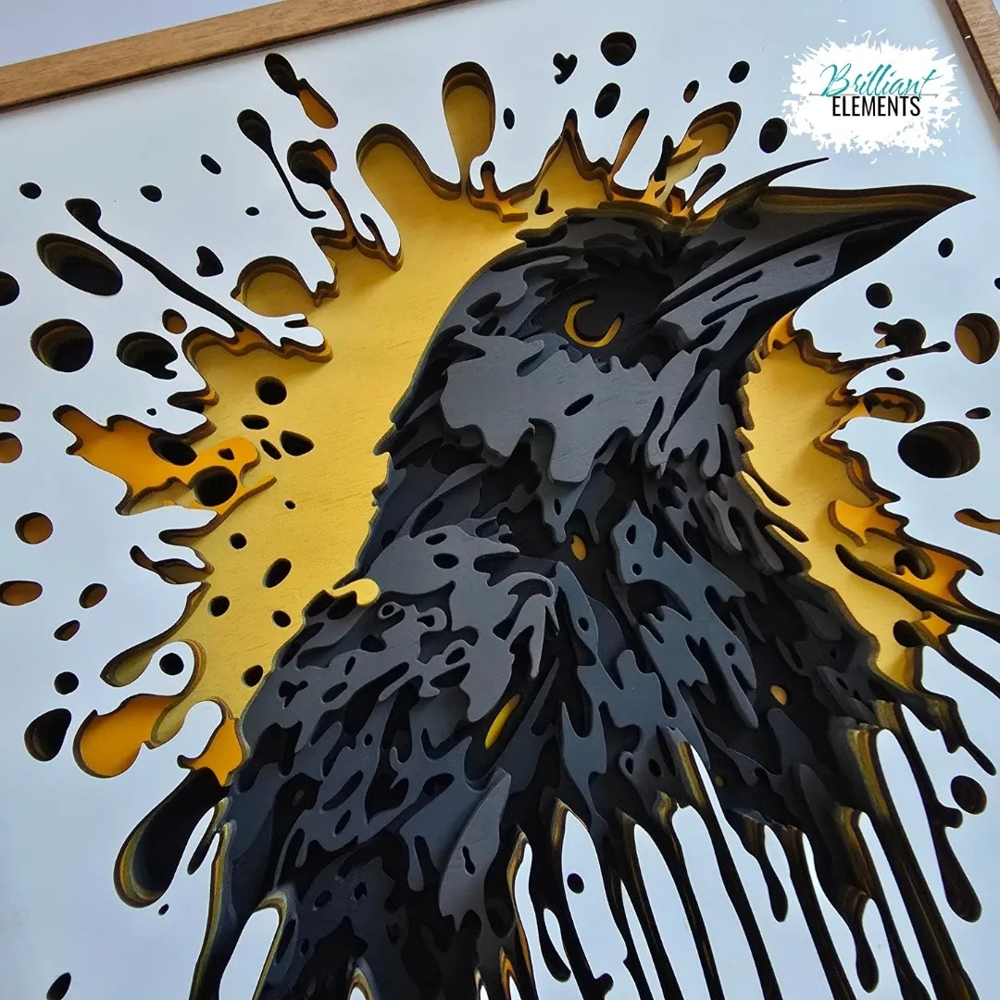

01
VERRE ET ART
La couleur prend vie
Rebecca Grindon · The Glass House
Suivez votre curiosité. Trouvez votre prochain coup de cœur. Passez un week-end avec les artisans qui mettent de la couleur dans nos vies.
Découvrir le festival ↗
BIEN PLUS QU’UNE SORTIE MAGASINAGE
Une création qui attire le regard, une rencontre qui laisse un souvenir : rien ne remplace la découverte en personne. Venez pour l’artisanat, restez pour les saveurs, les spectacles et l’esprit de communauté.
Découvrir les exposants ↗VERRE ET ART
Rebecca Grindon · The Glass House
 02
02BOIS ET JEUX
Michaud Toys

03BIJOUX ET DESIGN
Brilliant Elements
RÉSERVEZ VOTRE WEEK-END
Venez avec un proche, profitez de la journée et laissez une place aux belles surprises.
Ajouter au calendrier ↓ON SE RETROUVE ICI
Bâtiments nord et sud
3445 43rd Ave, Vernon, BC
Une navette gratuite passe toutes les 15 minutes dès 10 h, du Schubert Centre à Kal Tire Place, avec un arrêt au centre récréatif. Le service se termine une heure avant la fermeture quotidienne.
L’entrée est gratuite. Si vous le pouvez, apportez une denrée non périssable ou un don pour la banque alimentaire locale.
AVIS AUX ARTISANS
Des œuvres originales. Des détails soignés. Des créations faites par vous. Découvrez les modalités de candidature et une communauté qui célèbre le fait main.
Renseignements pour les exposants ↗Les candidatures pour 2027 ne sont pas encore ouvertes. Consultez la page officielle pour les mises à jour.
Aucun billet n’est nécessaire : l’entrée est gratuite. Les dons pour la banque alimentaire sont les bienvenus.
Retrouvez Creative Chaos à Kal Tire Place, au 3445, 43e Avenue à Vernon, en Colombie-Britannique. Le festival occupe les bâtiments nord et sud.
Consultez la page officielle des candidatures. Les créations doivent être fabriquées par l’exposant. La procédure publiée prévoit un envoi postal : vérifiez le dossier à jour avant de postuler.